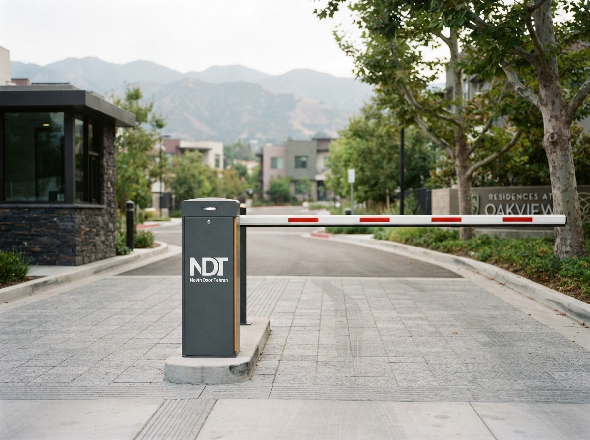
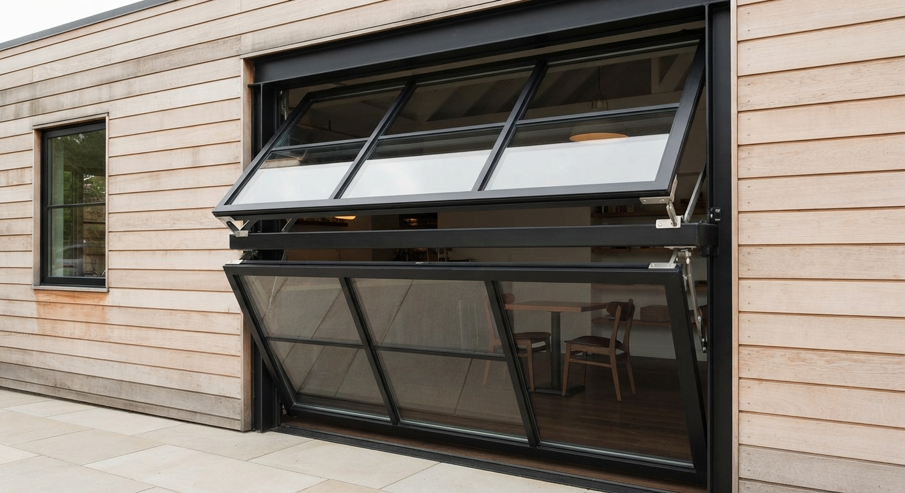

راهنمای انتخاب جک پارکینگی متناسب با وزن و تردد درب
بررسی تفاوت جکهای الکترومکانیک و هیدرولیک بر اساس عرض هر لنگه، وزن درب و میزان تردد روزانه ساختمان.
نکات کاربردی برای انتخاب درست سیستم تردد، نگهداری دورهای، عیبیابی و رعایت ایمنی دربهای اتوماتیک.
انتخاب درست سیستم تردد یا حفاظتی ساختمان، به شرایط واقعی دهانه، میزان رفتوآمد روزانه و فضای پیرامون ورودی بستگی دارد. در این صفحه مجموعهای از راهنماهای فنی تیم نوین درب تهران را برای آشنایی با معیارهای خرید، تنظیمات ایمنی و برنامه نگهداری تجهیزات گردآوری کردهایم؛ از مقایسه انواع جکهای پارکینگی و بررسی سنسورهای دربهای شیشهای اتوماتیک تا شناخت کاربرد دربهای کرکرهای، راهبندهای اتوماتیک و شیشهٔ بالکنی. همچنین برای فضاهای با عمق محدود، تفاوتهای اجرایی دربهای فولدینگ و دربهای سکشنال را بررسی کردهایم تا پیش از ثبت درخواست مشاوره و بازدید فنی دید روشنی داشته باشید.
بررسی تفاوت جکهای الکترومکانیک و هیدرولیک بر اساس عرض هر لنگه، وزن درب و میزان تردد روزانه ساختمان.

نحوه عملکرد چشمی ایمنی و رادار تشخیص حرکت برای پیشگیری از برخورد لنگههای شیشهای در ورودیهای پرتردد.

چکلیست بازبینی ریلها، کپسول انتهایی تیغهها و لیمیتسوئیچ موتور ساید و توبولار برای کاهش استهلاک.

وقتی فضای جلوی رمپ یا ارتفاع سقف پارکینگ محدود است، کدام مکانیزم جمعشوندگی کارایی بهتری دارد؟

آشنایی با تجهیزات بازدارنده برخورد بوم راهبند با خودرو و نکات نصب در ورودی مجتمعها.

مقایسه میزان بازشو، آببندی در برابر باد و باران و سهولت نظافت پنلهای سکوریت در بالکنهای شهری.

چگونه سنگینی غیرعادی حرکت پنلها را پیش از فشار آمدن به موتور سقفی تشخیص دهیم و تنظیم کنیم.

پاکسازی گردوغبار از مسیر ریل پایینی و تنظیم لولاهای میانی تا پنلهای تاشو بدون گیر کردن جمع شوند.

مراحل صحیح آزاد کردن کلاچ بازوها بدون آسیب به دنده برنجی و نحوه درگیر کردن مجدد پس از وصل برق.
مقالهای با این عبارت یا دستهبندی پیدا نشد.